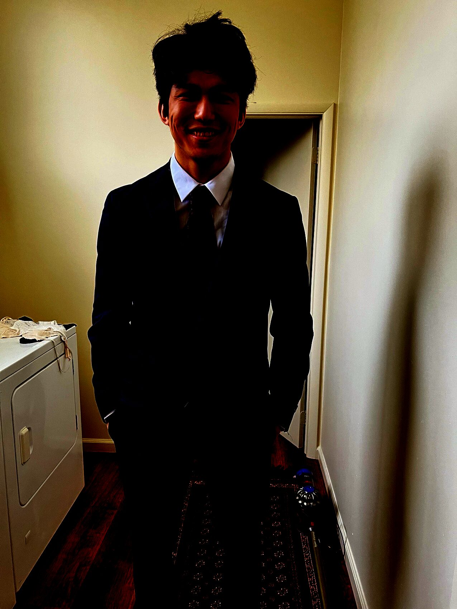

The ToolboxBuilt one tool at a time — most-used on top.
I came from Semey, Kazakhstan to the US in 2016 with one habit: I take things apart until they make sense. Two degrees and a full-time engineering job later, I still come home from work to work. This is the box I've been filling — open it up.
Open the chest
DRAG A DRAWER TO PULL IT OPEN · THEN DRAG A TOOL INTO THE VISE →
I'll show you what I built with it.
A TOOLBOX
Stephen King keeps a picture in my head: his grandfather hauled a heavy, multi-tier toolbox to every job so he never had to run back for the one thing he forgot. You spend a life stocking a box like that — most-used tools on top — and carry it so the work never catches you empty-handed.
I'm an engineer, not a novelist, but the box is the same. The top drawer is what I open every day; the deeper you dig, the older and slower-earned the tools get.

The hand that fills the box
I learned the language and the machine shop at about the same speed, picked up a BS and a master's in Mechanical Engineering from RIT — controls concentration, because that's the part that wouldn't leave me alone — and now I design mechanical and control systems for industrial vehicles at The Raymond Corporation. Owning good tools isn't the same as being a great builder; it just means that when the next interesting problem shows up, I'm not standing there empty-handed. So I keep stocking the box — curiosity is the one tool I'll never finish using.
If something in the box made you want to ask a question, build a thing, or argue about quaternions — the drawer's open.